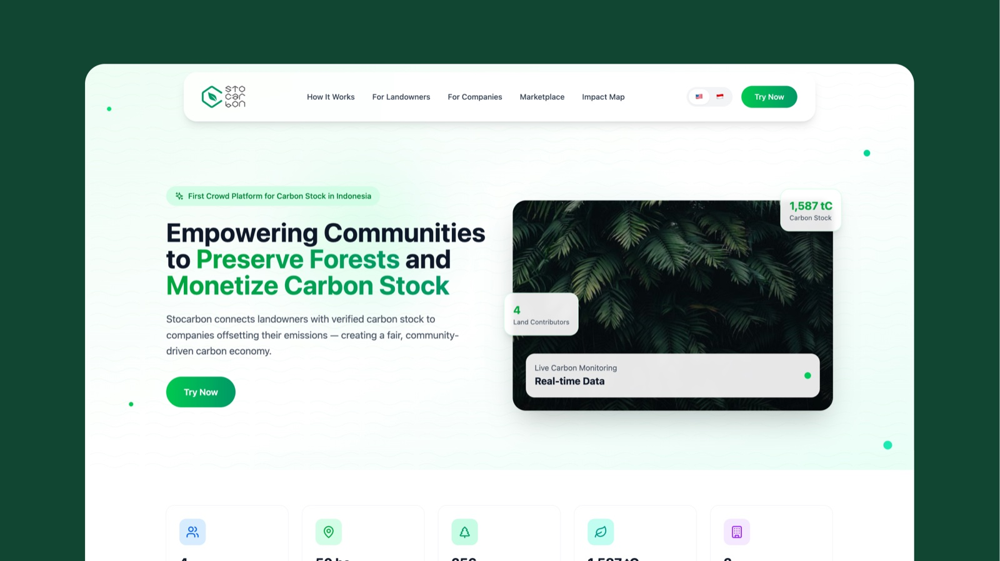
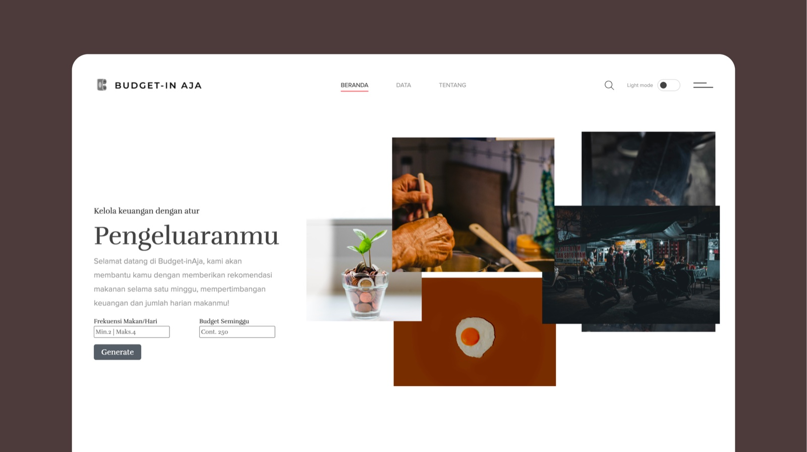
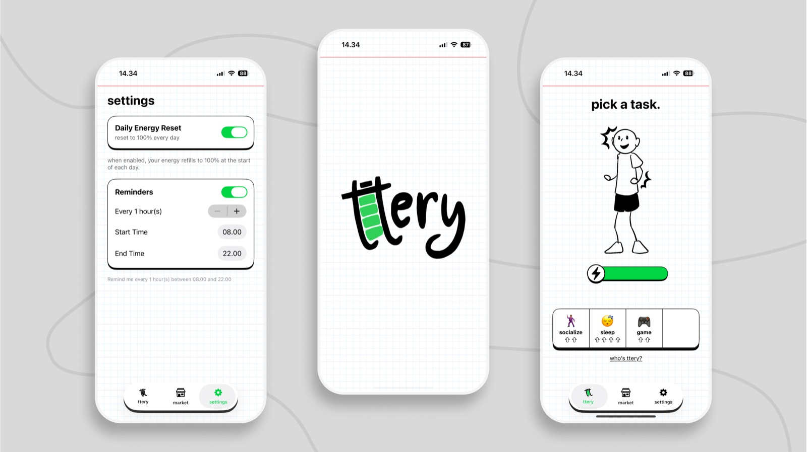
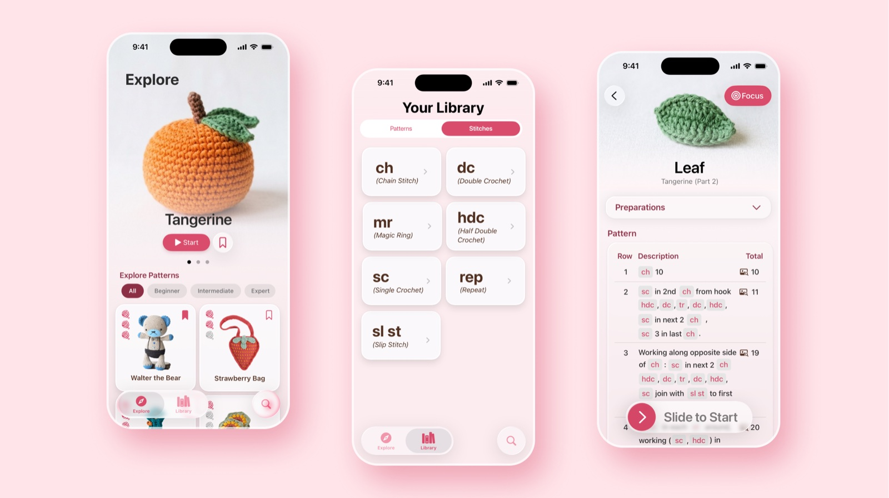

Clean, scalable code
Readable front-ends with structure that holds up, from WordPress builds to hand-written code.
Developer & AI Enthusiast
A passionate web and app developer focused on building modern, scalable, and reliable products. I care about shipping high quality, responsive apps and collaborating well with the people I build with.
Why me
Clean, responsive builds that communicate clearly, guide visitors smoothly, and support real goals.
Readable front-ends with structure that holds up, from WordPress builds to hand-written code.
Fast-loading, responsive, SEO-aware pages. Attention to detail from layout grid to lighthouse score.
Computer-vision research experience and ML curiosity. I connect web products with what AI can actually do.
Selected work
A curated collection of web, AI, and design work.

StocarbonFirst crowd platform for carbon stock in Indonesia, connecting landowners with companies offsetting emissions.

Budget-in AjaA web app that helps students plan budget-friendly meals for the week.
IoT-powered web platform for early stroke detection.

tteryPlayful iOS energy tracker, spend your daily battery on tasks, recharge with rest. Live on TestFlight.

StitchTabCrochet companion, learn stitches, browse patterns, and follow them row by row.
 KIDA
KIDA
Kids' AR app, scan everyday objects and they come alive to chat and teach. See it, know it, love it.
Experience
Experience across companies with very different backgrounds, web agencies, and academic research. Every stop taught me a new way to build.
iOS Developer
Challenge-based program building real iOS apps with Swift, collaborating in cross-functional teams on design, code, and product thinking.
2026Web Developer (PHP)
Built and maintained an internal HR web app serving 700+ employees, gathered requirements with HR and IT teams, and optimized performance.
Jun - Aug 2025System Analyst & Operational Support
Technical support for financial systems across operational teams, troubleshooting, smooth functionality, and data management with HeidiSQL and SQLyog.
JUN – SEP 2024Lab Assistant · Computer-Vision Research
Weekly hands-on coding sessions for 15+ students; research on computer vision in social media.
2022 – 2025WordPress Developer
Planned, created, and designed websites with WordPress and Figma; collaborated with design teams on scalable, reusable front-end templates.
SEP 2021 – JAN 2022Services
A focused mix of development, design, and data to turn ideas into working products.
Responsive, polished websites with clean structure, smooth interactions, and launch-ready execution.
Intuitive interfaces and user flows in Figma that make digital products feel simple and refined.
Data processing and applied machine learning, from computer-vision research to practical AI features.
Have a question, a role, or want to chat about tech, AI & design, my inbox is open.